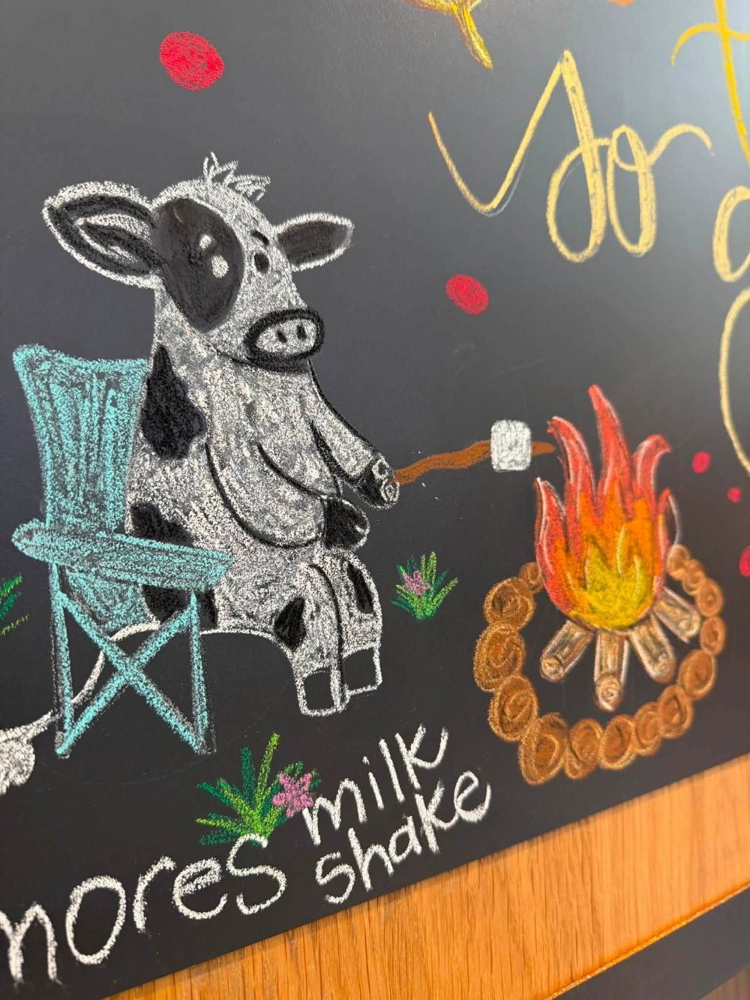
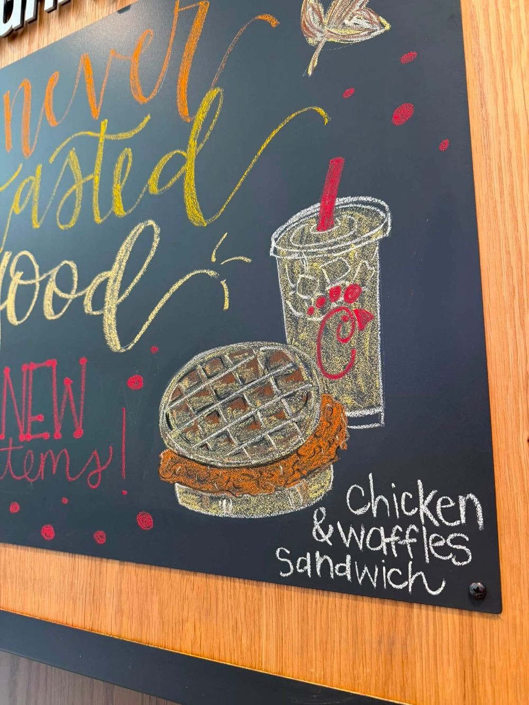

Wedding welcome signs
A lettered welcome with your names and date, sized to stand on an easel at the entrance.
Hand lettering
Names, quotes, verses and dates lettered by hand in brush script and classic serif styles, for the wall, the table and the day itself.
What can be lettered
Hand lettering from Chintz Creative is custom lettering drawn and painted by Bailey Powers, in brush script, classic serif or a mix of both. It is used for wedding and event signage, framed quotes and verses, and names and dates on watercolor pieces.
A lettered welcome with your names and date, sized to stand on an easel at the entrance.
Coordinated lettering across every sign on the day, in your wedding colors.
Every guest name lettered by hand and arranged by table.
Individually lettered names for each guest.
Seasonal menus, specials and community boards for restaurants, cafes and shops, lettered and illustrated in chalk.
A favorite scripture, song line or family saying, lettered and ready to frame.
Names, years and messages added to a custom watercolor, like the happy 40th birthday on the piece on the home page.
Work
New pieces are added as they are finished. Current work is on Instagram.



Before you start
The intake form walks through each of these. Rough answers are fine.
Questions
Yes. Chintz Creative letters wedding welcome signs, menus, bar signs, seating charts, table numbers, place cards and escort cards.
Brush script, classic serif, or a mix of the two. You can also choose artist's choice and Bailey will match the style to the piece.
Yes. Send the final guest list by table on the intake form, or in a reply to Bailey's quote once it is ready.
Yes. Names, dates and messages are often lettered directly onto custom watercolor pieces.
Book as soon as your date is set, and send final wording and guest names once they are confirmed.
Yes. Chintz Creative letters and illustrates chalkboards for restaurants, cafes, shops and events, including seasonal menu boards, specials and community boards.
Also from the studio: Custom watercolors · Birthday banners
Commission a piece
The intake form takes about five minutes. It asks for everything Bailey needs to quote your piece, so there is no back and forth before she can start.